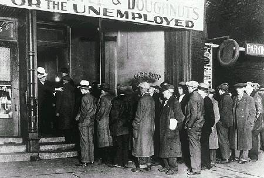

A segunda guerra mundial foi um conflito militar que aconteceu no século 20. Sendo ele o resultado de uma série de problemas que o mundo vivia naquela época. Por sua vez, este foi o conflito mais brutal e drástico da nossa história moderna.
Como tudo começou?
A primeira guerra mundial tem um papel significativamente importante no desonrolar da segunda. O povo Alemão estava sofrendo também com as duras sanções impostas pelo tratado de versalhes, que obrigava a Alemanha a arcar com os prejuízos de guerra causados nas outras nações e não ter um exercíto com mais de 100 mil homens. Neste meio tempo surgiu um partido que prometia trazer de volta a moral do povo alemão e torna-la uma potência mudial. Como podemos deduzir, este era o tão temido e indecoravel partido Nazista. O primeiro passo para a guerra foi a militarização de uma região que fazia fronteira com a França, conhecida como as Ardenas. Isso chamou a atenção do mundo, mas os até então governantes deixaram passar e tiveram "pena" da Alemanha. Talvez eles tivessem pensado que os alemães queriam apenas se re-erguer... no decorrer dos meses, a Áustria foi anexada ao território alemão. Foi uma ação amistosa, sem conflitos aparentes.
Soldados alemães durante a invasão da Polônia
O que foi muito diferente com a Polônia que foi literalmente invadida e devastada pelo o poderoso exército alemão. Daí em diante tudo apenas piorou.
Os dois lados da moeda
Com a tragédia anunciada e a Polônia em ruínas, a Europa estava em estado de atenção. A inglaterra e a França, basicamente ignoraram os pedidos de ajuda da Polônia durante a invasão. O que garantiu o massivo sucesso da ação executada. A guerra em si só começou a ganhar um escopo bem definido a partir do momento em que o governo Nazista decidiu que era a hora de invadir a França e se vingar pelas "injustiças" que aconteceram na primeira guerra mundial. O governo Francês achava que poderia fácilmente deter a Alemanha e novamente acabar com a nação. Pois os franceses imaginavam que a Alemanha ainda não estava tão forte militarmente falando. Mas o que ninguem contava era que o governo Nazista estava em segredo desenvolvendo tecnologías inovadoras e criando a própria e tão emblemática máquina de guerra alemã. O resultado foi que a França não conseguiu deter os alemães. E a bela capital da França, Paris, caiu nas mãos do Reichstag. E o poderoso exercíto alemão, caminhou de forma opressiva, imponente e com um tom de vingança sobre aquelas ruas. Dada a calamidade, o governo francês se viu na necessidade de pedir ajudar ao seu antigo aliado, que eram os ingleses.Que por sua vez também estavam ameaçados pela máquina de guerra Alemã, afinal eles também saíram vitoriosos do primeiro conflito.
Blocos rivais da guerra
A principio França e Inglaterra estavam unidas contra a Alemanha, que nesta altura do campeonato tmabém já tinha a Itália como sua principal aliada. Mais pra frente a União Soviética e os Estados Unidos fariam parte dos aliados, assim como o Japão também faria parte do Eixo. Em resumo, podemos dizer que haviam dois lados muito bem definidos: Os aliados que compartilhavam entre si muitas semelhanças e o eixo que pejorativamente era conhecido também como o eixo do mal, que também tinham muitas semelhanças entre si. Com o fim da segunda guerra, os blocos são desfeitos e uma nova trama se desenha: A guerra fria.
O contexto
O contexto do périodo entre guerras do século 20 foi bastante caótico, marcado principlamente por crises econômicas e instabilidades geopolíticas. tudo isso sempre será um terreno fértil para um conflito de interesses, seja ele entre pessoas ou entre nações. Após o fim da primeira grande guerra no ano de 1918, muita coisa aconteceu; como por exemplo a revolução russa que se iniciou em 1917 e a ascessão do partido comunista na Rússia.
Lennin e a revolução russa de 1917
Alguns anos mais tarde em 1929 aconteceu a grande depressão e a quebra da bolsa de valores nos estados unidos. No século 20 mais do que antes estavam em alta as pautas polítcas e econômicas como o Liberalismo e o Socialismo, que eram e são coisas que geram discurssões calorosas, podemos citar também de forma contextual sobre a ascenção do partido nacional socialista alemão conhecido naturalmente pelo nome de partido nazista.

Fila de pessoas na busca de um emprego durante a crise de 29
Falando sobre liberalismo e socialismo pode-se dizer que estes foram os vetores dos conflitos do século passado. A grosso modo podemos dizer que a primeira guerra mundial foi resultado do liberalismo, pois um dos principais motivos do conflito foi a intensa sede imperialista dos antigos impérios europeus. E na segunda guerra, o socialismo foi uma boa prerrogativa, por que com a ascenção e popularidade do partido socialista, algumas nações européias temiam que aquele modelo político economico chegasse aos seus territórios e acabassem com o regime até então vigente. Inclusive esse foi o motivo pelo qual os franceses e ingleses não atenderam aos pedidos de ajuda dos poloneses, eles tinham esperanças de que o exercito alemão fossem em direção a Rússia e mesmo que não vencessem por lá, poderiam ao menos conter a influência socialista. E de fato, vencer a Rússia e o socialismo era um dos objetivos do partido nazista, mas não naquele momento. A máquina de guerra alemã era genial no que diz respeito a estratégia. A crise de 29 foi um fator que alavancou exponencialmente a ascenção de uma nova guerra, todo mundo na europa estava individado e em dificuldades, por que todos os recursos foram gastos na primeira grande guerra e essa situação era especialmente pior para os alemães, que além de pobres, sem economia, ainda estavam limitados pelo tratado de versalhes. Isso sem citar a humilhação francesa que eventualmente acontecia com alguns cidadãos.
Os grandes representantes do totalitarismo no século 20
O povo precisava de algo para se apoiar, algo em que acreditar e isso tudo construiu o contexto ideal para a surgimento do fascismo na Alemanha, com Hitler como a cabeça desse novo regime. O nazifascimo devolveu os empregos para a população, trouxe uma ideologia populista e de certa forma "agradável" aos ouvidos alemães que tanto sofreram no pós primeira guerra. A economia da Alemanha agora era pautada na indústria de guerra e tecnologias para a temida maquina de guerra alemã e com o processo de anexação da Áustria e a invasão da Polonia a moral alemã foi reestabelecida. Com todas as condições favoravéis, o inferno estava pronto e com data certa para acontecer...
Sobre o dono do site
Me chamo Luiz Henrique, sou um entusiasta dos grandes conflitos mundiais até o então dia presente. Sim, se o canal "hoje no mundo militar" fosse uma empresa seria um sonho trabalhar com eles. Tenho a habilidade de memorização notável e adoro aprender novas coisas, desde que elas sejam interessantes XD.Sou aluno do Curso Técnico em internet das coisas, adoro tecnologia apesar de às vezes ter minhas desavensas com ela e o meu grande sonho é ser um psicologo famoso desses que aparece na TV e tudo mais. qualquer sugestão ou elogio me mande um email:luiz15@df.estudante.senai.br